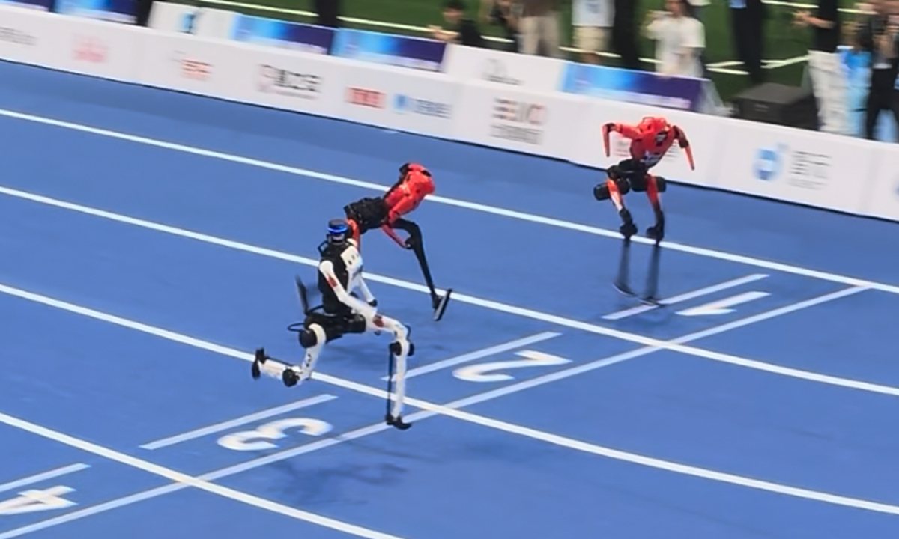

A Chinese humanoid robot sets 100-meter sprint record of 8.86 seconds
2026, August 25

A Chinese humanoid robot sets 100-meter sprint record of 8.86 seconds
2026, August 25
China
China's Tiangong Ultra humanoid robot ran 100 metres in 8.86 seconds at the World Humanoid Robot Games in Beijing on August 25. That is:0.72 seconds faster than Usain Bolt's human world record of 9.58 seconds.
0.53 seconds faster than the previous robot record of 9.39 seconds — which had itself been set only three days earlier.
An average speed of approximately 40.6 km/h over the 100 metres.
And the progress is remarkable: Tiangong's best 100-metre time at the 2025 event was reportedly 21.50 seconds. In roughly a year, it has gone from 21.50 to 8.86 seconds.
The funny — and important — part
It didn't exactly finish like Usain Bolt. 😄
After crossing the line, the robot crashed into the padded barrier and fell, with sparks reportedly coming from its waist. That highlights one of the biggest remaining challenges for humanoid robots: running fast is only part of the problem; stopping, recovering from instability and safely interacting with the real world are arguably more important.
China is using the games as a robotics showcase
The World Humanoid Robot Games involve more than 2,000 robots from 16 countries, competing in 51 events. These aren't limited to athletics — robots compete in football, table tennis, long jump and other physical events, as well as practical tasks involving household work, hotel services and emergency response.
And that's where this gets really interesting.
Beating Bolt is impressive, but being able to walk into a factory, pick up an unfamiliar object, plug in a cable, recover after making a mistake and safely complete a job without human intervention is the much bigger technological achievement. Reuters has highlighted exactly this distinction: athletic demonstrations show what the hardware can do, while real-world tasks test whether humanoid robots are actually becoming useful machines.
So, no, we're not quite at the point where a robot is replacing Usain Bolt on the Olympic track. But the rate at which these machines are improving is becoming difficult to ignore. Last year's 21.5-second robot becoming an 8.86-second robot is the genuinely eye-catching statistic here.